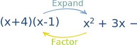
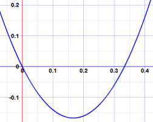
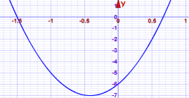
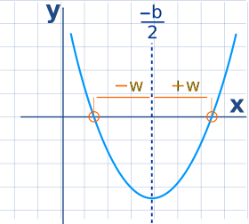

Factoring Quadratics
"Factoring" (or "Factorising" in the UK) a Quadratic is:
finding what to multiply to get the Quadratic
It is called "Factoring" because we find the factors (a factor is something we multiply by)
Example: (x+4) and (x−1) are factors of x2 + 3x − 4

Let us "expand" (x+4) and (x−1) to be sure:
Yes, (x+4) and (x−1) are definitely factors of x2 + 3x − 4
Did you see that Expanding and Factoring are opposites?
Expanding is usually easy, but Factoring can often be tricky.
It is like trying to find which ingredients
went into a cake to make it so delicious.
It can be hard to figure out!
OK, let's try an example where we don't know the factors yet:
Common Factor
First we can check for any common factors.
Example: what are the factors of 6x2 − 2x = 0 ?
6 and 2 have a common factor of 2:
2(3x2 − x) = 0
And x2 and x have a common factor of x:
2x(3x − 1) = 0
And we have done it! The factors are 2x and 3x − 1,
We can now also find the roots (where it equals zero):
- 2x is 0 when x = 0
- 3x − 1 is zero when x = 13
And this is the graph (see how it is zero at x=0 and x=13):

But it is not always that easy ...
Guess and Check
Example: what are the factors of 2x2 + 7x + 3 ?
No common factors.
Maybe we can guess an answer? Then check if we are right ... we may get lucky!
Let's guess (2x+3)(x+1):
(2x+3)(x+1) = 2x2 + 2x + 3x + 3
= 2x2 + 5x + 3 (Close but WRONG)
How about (2x+7)(x−1):
(2x+7)(x−1) = 2x2 − 2x + 7x − 7
= 2x2 + 5x − 7 (WRONG AGAIN)
OK, how about (2x+9)(x−1):
(2x+9)(x−1) = 2x2 − 2x + 9x − 9
= 2x2 + 7x − 9 (WRONG AGAIN!)
We could be guessing for a long time before we get lucky.
That is not a very good method. So let us try something else.
A Method For Simple Cases
There is a method for simple cases.
With the quadratic equation in this form:

Step 1: Find two numbers that multiply to give ac (in other words a times c), and add to give b.
Example: 2x2 + 7x + 3
ac is 2×3 = 6 and b is 7
So we want two numbers that multiply together to make 6, and add up to 7
In fact 6 and 1 do that (6×1=6, and 6+1=7)
How do we find 6 and 1?
It helps to list the factors of ac=6, and then try adding some to get b=7.
Factors of 6 include 1, 2, 3 and 6.
Aha! 1 and 6 add to 7, and 6×1=6.
Step 2: Rewrite the middle with those numbers:
Rewrite 7x with 6x and 1x:
2x2 + 6x + x + 3
Step 3: Factor the first two and last two terms separately:
The first two terms 2x2 + 6x factor into 2x(x+3)
The last two terms x+3 don't actually change in this case
So we get:
2x(x+3) + (x+3)
Step 4: If we've done this correctly, our two new terms should have a clearly visible common factor.
In this case we can see that (x+3) is common to both terms, so we can go:
Done!
Check: (2x+1)(x+3) = 2x2 + 6x + x + 3 = 2x2 + 7x + 3 (Yes)
Let's see Steps 1 to 4 again, in one go:
| 2x2 + 7x + 3 |
| 2x2 + 6x + x + 3 |
| 2x(x+3) + (x+3) |
| 2x(x+3) + 1(x+3) |
| (2x+1)(x+3) |
OK, let us try another example:
Example: 6x2 + 5x − 6
Step 1: ac is 6×(−6) = −36, and b is 5
List the positive factors of ac = −36: 1, 2, 3, 4, 6, 9, 12, 18, 36
One of the numbers has to be negative to make −36, so by playing with a few different numbers I find that −4 and 9 work nicely:
−4×9 = −36 and −4+9 = 5
Step 2: Rewrite 5x with −4x and 9x:
6x2 − 4x + 9x − 6
Step 3: Factor first two and last two:
2x(3x − 2) + 3(3x − 2)
Step 4: Common Factor is (3x − 2):
(2x+3)(3x − 2)
Check: (2x+3)(3x − 2) = 6x2 − 4x + 9x − 6 = 6x2 + 5x − 6 (Yes)
Finding Those Numbers
The hardest part is finding two numbers that multiply to give ac, and add to give b.
It is partly guesswork, and it helps to list out all the factors.
Here is another example to help you:
Example: ac = −120 and b = 7
What two numbers multiply to −120 and add to 7 ?
The factors of 120 are (plus and minus):
1, 2, 3, 4, 5, 6, 8, 10, 12, 15, 20, 24, 30, 40, 60, and 120
We can try pairs of factors (start near the middle!) and see if they add to 7:
- −10 x 12 = −120, and −10+12 = 2 (no)
- −8 x 15 = −120 and −8+15 = 7 (YES!)
Get Some Practice
You can practice simple quadratic factoring.
Why Factor?
Well, one of the big benefits of factoring is that we can find the roots of the quadratic equation (where the equation is zero).
All we need to do (after factoring) is find where each of the two factors becomes zero
Example: what are the roots (zeros) of 6x2 + 5x − 6 ?
We already know (from above) the factors are
(2x + 3)(3x − 2)
And we can figure out that
(2x + 3) is zero when x = −3/2
(3x − 2) is zero when x = 2/3
So the roots of 6x2 + 5x − 6 are:
−3/2 and 2/3
Here is a plot of 6x2 + 5x − 6, can you see where it equals zero?

We can also check it using a bit of arithmetic:
At x = −32: 6(−32)2 + 5(−32) − 6 = 6×(94) − 152 − 6 = 544 − 152 - 6 = 0
At x = 23: 6(23)2 + 5(23) − 6 = 6×(49) + 103 − 6 = 249 + 103 - 6 = 0
Graphing
We can also try graphing the quadratic equation. Seeing where it equals zero can give us clues.
Example: (continued)
Starting with 6x2 + 5x − 6 and just this plot:
The roots are around x = −1.5 and x = +0.67, so we can guess the roots are:
−3/2 and 2/3
Which can help us work out the factors 2x + 3 and 3x − 2
Always check though! The graph value of +0.67 might not really be 2/3
General Solution
Quadratic equations have symmetry, the left and right are like mirror images:

The midline is at −b/2, and we can calculate the value w with these steps:
- First, "a" must be 1, if not then divide b and c by a:
- b = b/a, c = c/a
- mid = −b/2
- w = √(mid2 − c)
- roots are at mid−w and mid+w
Example: x2 + 3x − 4
a = 1, b = 3 and c = −4
- a= 1, so we can go to next step
- mid = −32
- w = √[(32)2 − (−4)] = √(94 + 4) = √254 = 52
- roots are at −32−52 = −4 and −32+52 = 1
So we can factor x2 + 3x − 4 into (x + 4)(x − 1)
Quadratic formula
We can also use the quadratic formula:

We get two answers x+ and x− (one is for the "+" case, and the other is for the "−" case in the "±") that gets us this factoring:
a(x − x+)(x − x−)
Example: what are the roots of 6x2 + 5x − 6 ?
Substitute a=6, b=5 and c=−6 into the formula:
x = −b ± √(b2 − 4ac)2a
= −5 ± √(52 − 4×6×(−6))2×6
= −5 ± √(25 + 144)12
= −5 ± √16912
= −5 ± 1312
So the two roots are:
x+ = (−5 + 13) / 12 = 8/12 = 2/3,
x− = (−5 − 13) / 12 = −18/12 = −3/2
(Notice that we get the same answer as when we did the factoring earlier.)
Now put those values into a(x − x+)(x − x−):
6(x − 2/3)(x + 3/2)
We can rearrange that a little to simplify it:
3(x − 2/3) × 2(x + 3/2) = (3x − 2)(2x + 3)
Done!